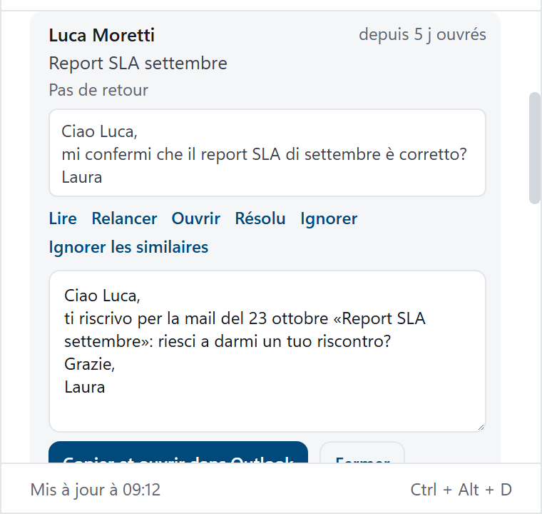
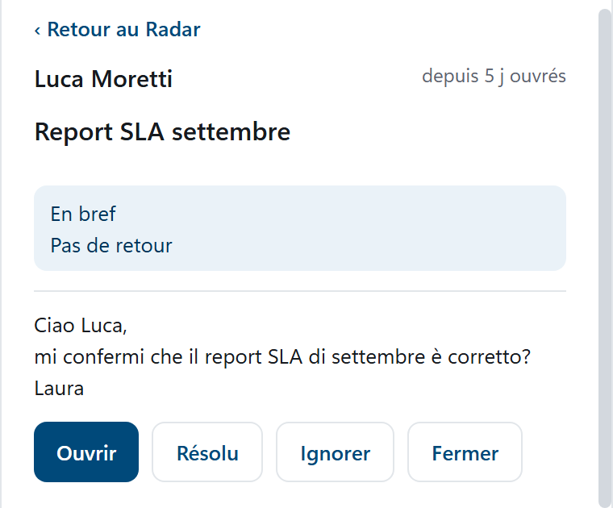
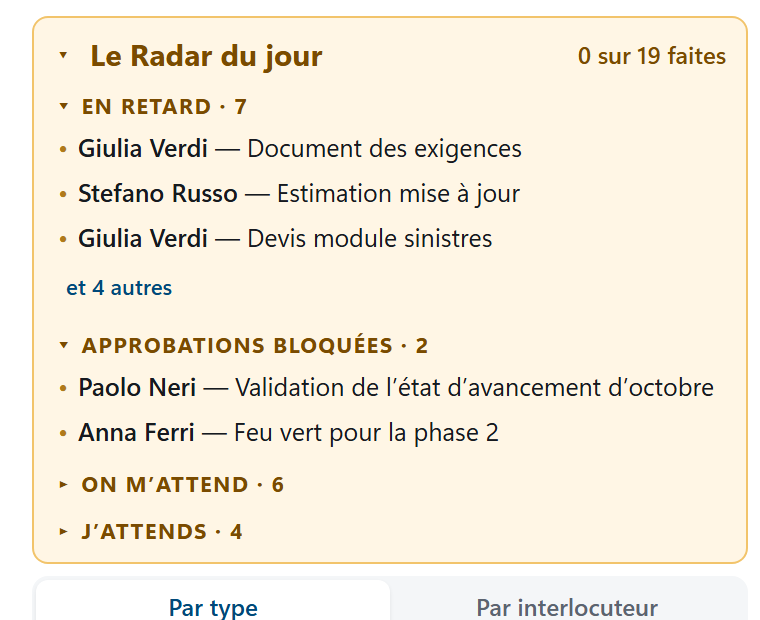
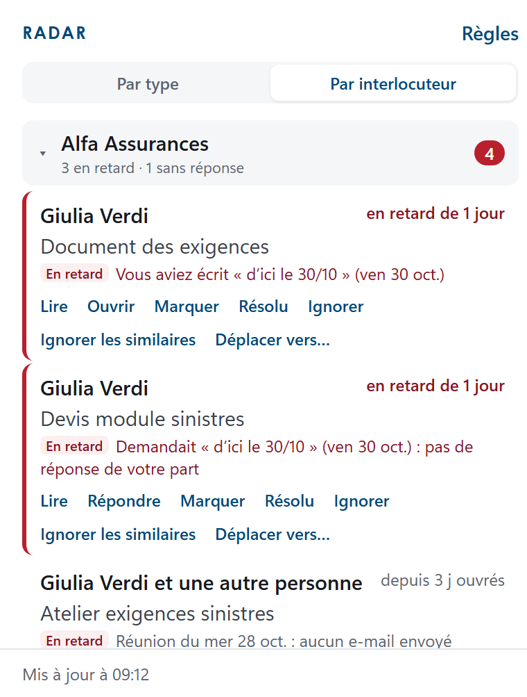
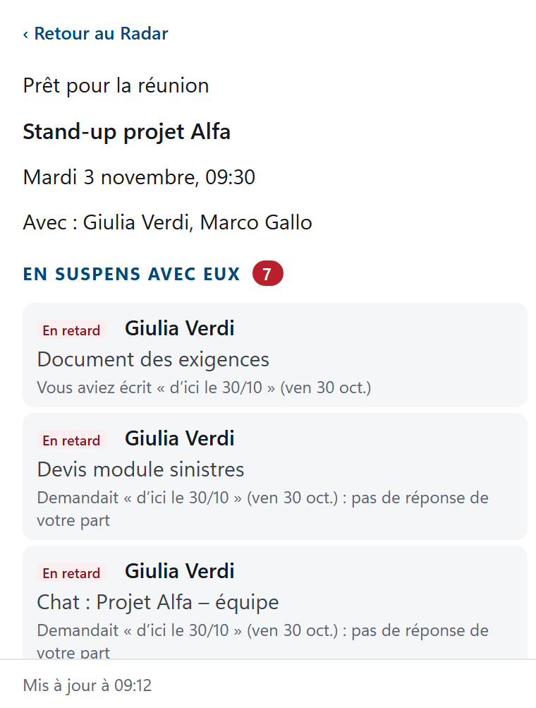

DASH
Deadlines, Approvals and Signals Hub
Manuel utilisateur · version 1.6.6
Windows · Mac · iPhone et iPad · Android
Windows · Mac · iPhone et iPad · Android
 by TMAC
by TMAC
by TMAC
by TMACQui travaille aujourd’hui pour des clients et sur des projets ne manque pas d’outils : il en a trop. Les demandes arrivent par e-mail, en réunion et par chat ; les engagements sont dans le calendrier, dans To Do et souvent seulement en mémoire. Aucun de ces outils ne vous dit le plus important : ce qui est en train de vous échapper.
Pour tout garder sous contrôle, il faut relire chaque jour e-mails et chats, ou tenir à la main une liste de plus. Souvent, on ne découvre le problème qu’à l’arrivée de la relance.
DASH est un petit panneau, sur l’ordinateur et sur le téléphone, qui vous aide à ne rien perdre de votre travail quotidien. Il fonctionne sur Windows, Mac, iPhone et iPad et Android. Il lit vos e-mails, votre calendrier, vos tâches To Do et, si vous le souhaitez, vos chats Teams, et vous montre en un coup d’œil :
Vous n’avez rien à saisir : DASH travaille sur les données que vous avez déjà dans Microsoft 365. Il ne remplace ni Outlook, ni Teams, ni vos outils de projet : il les accompagne.
| Aujourd’hui | Avec DASH |
|---|---|
| Une demande passe sous d’autres e-mails | Le Radar la remet en vue dans les blocs des personnes qui attendent et des retards |
| Une approbation est bloquée | Le Radar la signale après le nombre de jours que vous choisissez |
| Personne ne vous a répondu | Le Radar vous le rappelle et l’action de relance prépare le texte |
| Le suivi d’une réunion ne démarre pas | Le Radar signale les réunions avec des externes sans e-mail de votre part aux participants |
| Vous entrez en réunion sans préparation | La préparation montre en une minute ce qui est en suspens et les derniers échanges |
| Une demande se perd dans un chat | DASH lit aussi Teams et, avec l’IA, reconnaît les demandes implicites |
| Vous ne savez pas par où commencer la journée | À 8 h 30, le résumé de ce qui est en suspens |
Vous avez déjà reçu une invitation ou un fichier d’installation ? Allez directement au chapitre de votre appareil :
| Vous avez | Comment l’installer | À lire |
|---|---|---|
| PC Windows (10 ou 11) | Le fichier DASH-Setup-1.6.6.exe | Chapitre 10 |
| Mac avec processeur Apple (M1 ou plus récent) | Le fichier DASH-1.6.6-mac.dmg | Chapitre 11 |
| iPhone ou iPad | Une invitation TestFlight | Chapitre 12 |
| Téléphone Android (7 ou plus récent) | Le fichier DASH-1.6.6-android.apk | Chapitre 13 |
La suite du manuel suit cet ordre :

En haut : l’icône, le nom DASH avec sa version et, s’il est défini, le logo de votre entreprise. À droite, trois boutons :
En dessous : message d’accueil, prochain rendez-vous, horloge et météo.
Puis le Radar (chapitre 4) et, plus bas, Agenda (rendez-vous d’aujourd’hui et des prochains jours, avec « Rejoindre » pour les réunions Teams), Calendrier (semaine ou mois) et To Do (case à cocher pour terminer, « ▸ note » pour lire la note de la tâche, un champ pour en ajouter une).
Chaque section s’ouvre et se ferme en cliquant sur son titre ; DASH mémorise vos choix.

Le Radar a quatre blocs, fermés au démarrage : le nombre à côté du titre indique combien de signaux il y a (en rouge pour « En retard » et « Approbations bloquées »). Cliquez sur le titre pour les ouvrir.
Chaque signal indique qui, l’objet, depuis combien de jours ouvrés il attend (les samedis, dimanches, le jour de l’An et Noël ne comptent pas, ni les jours ajoutés dans Vos jours fériés) et une ligne d’explication. Une bordure rouge signale ce qui est urgent ou échu. Sans IA, les demandes, approbations et échéances sont reconnues en italien, anglais, allemand et français, quelle que soit la langue de l’application.
Cliquez sur un signal pour l’ouvrir : l’objet complet et le texte apparaissent (les premières lignes de l’e-mail ou du message Teams, ou la note de la tâche To Do). Un autre clic le referme ; pour tout lire, utilisez Ouvrir.
Étiquettes : Teams (violet) si le signal vient d’un chat Teams ; AI s’il a été lu par l’intelligence artificielle.
Sur l’ordinateur, passez la souris sur un signal pour voir les actions ; sur le téléphone, elles sont toujours visibles sous le signal :
| Action | Ce qu’elle fait |
|---|---|
| Répondre / Ouvrir | Ouvre l’e-mail ou la réunion dans l’application Outlook (ou le chat dans l’application Teams). Si l’application n’est pas installée, ouvre la version web. |
| Lire | Ouvre le signal en entier dans une fenêtre plus grande : qui, objet, la synthèse et tout le nouveau texte de l’e-mail ou du message. « Retour au Radar » la referme. |
| Déplacer vers… | Place le signal dans un autre groupe de la vue « Par interlocuteur » (voir plus bas). Le choix vaut aussi pour les prochains signaux. |
| Relancer | Prépare le texte d’une relance courtoise, que vous pouvez modifier. « Copier et ouvrir dans Outlook » le copie et ouvre l’e-mail : collez-le dans la réponse. Avec l’IA active, il y a aussi « Réécrire avec l’IA ». Le texte de relance est rédigé en italien. |
| Résolu | C’est fait (même de vive voix ou par téléphone) : le signal disparaît. |
| Ignorer | Le signal n’est pas pertinent : il disparaît. |
| Ignorer les similaires | Crée une règle : désormais, les e-mails avec le même expéditeur ou destinataire et un objet similaire n’entrent plus dans le Radar (ex. les rapports hebdomadaires d’un client). |
| Terminée | Uniquement pour les tâches To Do : la marque comme terminée. |

Cliquez sur un signal pour l’ouvrir : vous voyez le texte et les actions. L’action de relance prépare un texte que vous pouvez modifier, puis copier dans la réponse.

L’action de lecture montre le signal entier, avec la synthèse et tout le nouveau texte de l’e-mail ou du message.
Les signaux masqués avec Résolu ou Ignorer redeviennent visibles si quelque chose de nouveau arrive dans la même conversation. Dans Règles du Radar › « Revoir les signaux masqués », vous les retrouvez et pouvez en réafficher un avec « Réafficher » ; « Les réafficher » les fait tous réapparaître.
À 8 h 30 les jours ouvrés, DASH envoie une notification, qui sous Windows reste à l’écran jusqu’à ce que vous la fermiez. En haut du Radar, chaque jour dès la première mise à jour, vous trouvez l’encadré « Le Radar du jour » : les points en suspens du matin, par bloc (« En retard » et « Approbations bloquées » ouverts, les autres d’un clic). Pendant la journée l’encadré se met à jour : ce que vous fermez reste barré avec ✓, ce qui arrive ensuite apparaît avec l’étiquette « nouveau » et en haut vous voyez ce que vous avez fait (« 3 sur 9 faites »). Un clic sur un élément l’ouvre ; un clic sur le titre réduit l’encadré à une ligne et le rouvre. Pour l’instant, le texte du résumé est en italien. Le résumé se désactive dans les Règles du Radar.

Le cadre du résumé du matin : ce qui est en suspens ce matin, par bloc, avec ce que vous avez déjà fait.
En haut du Radar, choisissez « Par type » (les quatre blocs) ou « Par interlocuteur ». Dans la seconde vue, DASH regroupe lui-même les signaux : par entreprise pour ceux qui écrivent de l’extérieur (d’après le domaine de l’e-mail : alfa-assicurazioni.it devient « Alfa Assicurazioni »), par personne pour les collègues et les boîtes personnelles. Chaque groupe indique ce qui est en suspens, par exemple « Alfa Assicurazioni · 2 vous attendent · 1 en retard ».

La vue par interlocuteur : les signaux regroupés par entreprise ou personne, avec ce qui est en suspens.
Rien à configurer. Si un groupe est faux, ouvrez le signal et utilisez Déplacer vers… : saisissez le nom du groupe (même nouveau, par exemple « Administration ») et choisissez si cela vaut seulement pour cette personne ou pour toute son entreprise. Groupe automatique revient à la proposition de DASH. Vos choix se synchronisent avec vos autres appareils.
Un message que vous marquez d’un indicateur (le drapeau) dans Outlook devient une tâche dans le Radar : dans « On m’attend », ou dans « En retard » une fois l’échéance de l’indicateur dépassée. Un message envoyé marqué rejoint « J’attends » comme suivi à faire. Quand vous marquez l’indicateur comme terminé dans Outlook, le signal se ferme tout seul. La catégorie « DASH: importante » fait entrer un message dans le Radar même si une règle l’exclurait ; « DASH: ignora » fait l’inverse.
Avec l’option Marquer les messages depuis DASH (chapitre 5), les signaux affichent Marquer et Terminé : l’indicateur est aussi posé et terminé dans Outlook.
Dans l’Agenda, à côté des réunions avec d’autres personnes, il y a Préparer. Cela ouvre une fiche qui se lit en une minute : ce qui est en suspens avec les participants (y compris leurs collègues de la même entreprise) et les derniers échanges des deux dernières semaines, chacun s’ouvre d’un clic. Avec l’intelligence artificielle active, 3 lignes de synthèse apparaissent aussi en haut : l’IA ne reçoit que les objets et les détails, jamais le texte des e-mails.

La fiche de préparation de réunion : ce qui est en suspens avec les participants, puis les derniers échanges.
15 minutes avant (Windows et Mac uniquement) la réunion, une notification arrive : cliquez dessus pour ouvrir la fiche. Le rappel se désactive dans les Règles du Radar.

Elles s’ouvrent avec Règles, en haut à droite du Radar.
15/08 vaut chaque année, 24/12/2026 une seule fois. Dans le calendrier de DASH, ces jours, le jour de l’An et Noël apparaissent en rouge.Chaque règle a deux champs ; si vous remplissez les deux, les deux doivent correspondre :
nom@client.fr) ou un domaine (client.fr, sous-domaines compris) ;Exemple : De/à client.fr et Objet rapport, extraction hebdomadaire exclut les rapports de ce client, mais pas ses autres e-mails.
En bas du panneau, Exclus lors de la dernière mise à jour (cliquez pour ouvrir) liste les e-mails écartés et la raison : utile pour vérifier que les règles font ce que vous voulez. Écartés car ils ne ressemblent pas à des demandes liste les e-mails qui vous sont adressés et que DASH n’a pas considérés comme des demandes, d’abord ceux qui contiennent une échéance ou une approbation. N’oubliez pas de cliquer sur Enregistrer.
Avec Lire aussi Microsoft Teams activé (Règles du Radar), DASH prend aussi en compte :
La première fois, DASH peut vous demander de vous reconnecter : Microsoft doit confirmer les autorisations Teams. Si Teams est illisible, une ligne rouge « Teams illisible » avec la raison apparaît sous le titre du Radar.

Si vous utilisez DASH sur plusieurs appareils (par exemple le PC et l’iPhone), activez Synchroniser avec vos autres appareils sur chacun d’eux. Dès lors ils partagent :
Restent propres à chaque appareil : Client ID et Tenant, la langue, les clés Anthropic et OpenAI, le raccourci clavier, le lancement avec Windows, le logo et les coûts de l’IA. La synchronisation a lieu à chaque mise à jour et quelques secondes après chacune de vos actions ; l’heure de la dernière synchronisation apparaît sous la case. Les règles sur les e-mails à ne pas prendre en compte ajoutées sur différents appareils s’additionnent, et celles retirées le restent ; pour les autres valeurs des Règles, la dernière modification l’emporte.
Les données sont conservées dans un fichier, dans un dossier réservé à DASH dans votre OneDrive (Applications › DASH) : ne le déplacez pas et ne le modifiez pas. La première fois, DASH peut vous demander de vous reconnecter, car Microsoft doit confirmer l’autorisation pour ce dossier.
Cela se fait une seule fois pour toute l’organisation, avant d’installer l’application. Si vous n’êtes pas l’administrateur, passez au chapitre de votre plateforme.
DASH lit les données sur le serveur de messagerie de votre organisation. Aujourd’hui, la plateforme prise en charge est Microsoft 365 (Outlook, calendrier, To Do et Teams) ; quand d’autres plateformes seront disponibles, leurs instructions figureront dans ce chapitre.
DASH utilise une inscription d’application dans Entra ID avec des autorisations déléguées : chaque personne ne voit que sa propre boîte aux lettres, et les données ne circulent qu’entre les appareils des utilisateurs et le Microsoft 365 de votre organisation (TMAC ne reçoit rien). Chaque organisation utilise son propre tenant et, pour l’intelligence artificielle, sa propre licence Copilot ou clé Anthropic ou OpenAI.
Une seule fois pour toute l’organisation, l’administrateur inscrit DASH dans votre tenant comme suit et communique aux utilisateurs le Client ID et le Tenant (ou le nom de domaine), à saisir au premier démarrage.
https://entra.microsoft.com › Identité › Applications › Inscriptions d’applications › Nouvelle inscription.http://localhost. S’inscrire.| Quand | Autorisations |
|---|---|
| Toujours | User.Read, Mail.Read, Calendars.Read, Tasks.ReadWrite, offline_access |
| Avec Teams activé | Chat.Read, Team.ReadBasic.All, Channel.ReadBasic.All, ChannelMessage.Read.All |
| Avec la synchronisation entre appareils | Files.ReadWrite.AppFolder (seulement le dossier DASH dans le OneDrive de l’utilisateur, Applications › DASH) |
| Avec le moteur Copilot | Sites.Read.All, People.Read.All, OnlineMeetingTranscript.Read.All, Chat.Read, ChannelMessage.Read.All, ExternalItem.Read.All (tous requis par l’API Chat de Microsoft 365 Copilot) |
| Avec « Marquer les messages depuis DASH » | Mail.ReadWrite (uniquement pour poser et retirer l’indicateur d’Outlook ; DASH ne supprime ni n’envoie aucun message) |
Après les avoir ajoutées : Accorder le consentement de l’administrateur pour l’organisation. Les autorisations Teams, Copilot et de synchronisation ne sont demandées aux utilisateurs que s’ils activent ces fonctions.
Pour l’application iPhone : dans Authentification, ajoutez aussi la plateforme iOS / macOS avec le Bundle ID it.tmac.dash.
Pour l’application Android : dans Authentification › Ajouter une plateforme › Android, indiquez le nom du package it.tmac.dash et le hachage de signature Tvy2xt5sIIb4Hyur+URCnvo+YmQ= (le fichier .apk distribué par TMAC est signé avec cette clé).
Si vous voulez utiliser l’IA, choisissez le moteur sur chaque appareil, ou sur un seul avec la synchronisation activée (chapitre 7). Les autorisations pour Copilot sont au chapitre 8.

Elle est facultative : sans IA, le Radar fonctionne avec des règles et ne coûte rien. Avec l’IA, un modèle lit le texte des e-mails et messages retenus et reconnaît les demandes implicites, les relances polies et les engagements pris par écrit ; il rédige aussi les relances.
Elle s’ouvre depuis Paramètres › Intelligence artificielle… Choisissez le Moteur :
E-mails lus par jour, au maximum est une limite de sécurité (150 par défaut) ; chaque e-mail n’est lu qu’une fois. Avec Anthropic et OpenAI, il faut aussi cocher l’autorisation d’envoi des données, sur chaque appareil : sans elle, aucune donnée n’est envoyée et le Radar fonctionne avec ses règles. Vous la retirez en décochant la case ou en choisissant « Règles seulement ». Le cadre en dessous indique combien d’e-mails ont été lus aujourd’hui et, pour Anthropic et OpenAI, le coût estimé du mois. Les textes rédigés par l’IA (synthèses, relances) sont pour l’instant en italien.
Lisez seulement le chapitre de votre plateforme, puis la première connexion.
Il faut un PC sous Windows 10 ou 11 et le fichier DASH-Setup-1.6.6.exe.
DASH-Setup-1.6.6.exe.DASH se comporte comme un widget : il reste sur le bureau et passe sous les autres applications quand vous cliquez sur une autre fenêtre. Il n’est pas fermé : pour le ramener au premier plan, utilisez le raccourci Ctrl + Alt + D, cliquez sur l’icône de DASH dans la zone de notification (près de l’horloge de Windows) ou affichez le bureau (Win + D).
Un clic droit sur l’icône dans la zone de notification ouvre un menu avec Aggiorna ora (actualiser), Impostazioni (paramètres), Avvia con Windows (lancer avec Windows), Ripristina posizione (rétablir la position), Esci dall'account (se déconnecter) et Chiudi DASH (fermer DASH). Pour l’instant ce menu n’existe qu’en italien.
%APPDATA%\DASH : supprimez-le si vous voulez tout effacer.
Sur Mac, DASH est le même programme que sur Windows. Il faut un Mac avec processeur Apple (M1 ou plus récent) : cette version ne s’ouvre pas sur les Mac à processeur Intel.
DASH-1.6.6-mac.dmg.Command+Shift+D..dmg et faites glisser DASH sur Applications, en choisissant Remplacer. Paramètres, règles et connexion sont conservés.~/Library/Application Support/DASH : supprimez ce dossier si vous voulez tout effacer.Pour l’instant, DASH pour iPhone et iPad s’installe avec TestFlight, l’application d’Apple pour les versions de test.

L’interface, le Radar, les règles et l’intelligence artificielle sont les mêmes que sur l’ordinateur. Voici ce qui change :
dash.tmac.it/assistance.html.Si vous utilisez aussi DASH sur un autre appareil et voulez les mêmes règles, signaux masqués et analyses de l’IA, activez Synchroniser avec vos autres appareils sur les deux (chapitre 7).
Déconnectez-vous d’abord et, si vous avez saisi une clé d’IA, utilisez « Supprimer la clé ». Maintenez ensuite le doigt sur l’icône de DASH sur l’écran d’accueil › Supprimer l’app › Supprimer l’app.
Sur les téléphones Android, DASH est la même application que sur iPhone, et Android 7 ou plus récent est nécessaire. Les particularités du téléphone sont au chapitre 12 (« Les particularités du téléphone »), y compris les deux colonnes avec le téléphone à l’horizontale ou sur les pliables ouverts.
Pour l’instant DASH pour Android n’est pas sur le Play Store : il s’installe à partir du fichier DASH-1.6.6-android.apk, que vous recevez par e-mail, OneDrive ou Teams.
.apk par-dessus l’ancien : paramètres, règles et connexion sont conservés.Déconnectez-vous d’abord et, si vous avez saisi une clé d’IA, utilisez « Supprimer la clé ». Maintenez ensuite le doigt sur l’icône de DASH › Désinstaller.
La première connexion est identique sur tous les appareils. Sur le téléphone, là où vous lisez « cliquez », touchez.
entreprise.fr, ou l’ID d’annuaire). Cliquez sur Enregistrer.demo dans le champ Application (client) ID (le Tenant n’est pas nécessaire), cliquez sur Enregistrer puis sur Se connecter. DASH affiche des données d’exemple, dans la langue de l’application, avec la bande « Mode démo » toujours visible ; il ne se connecte pas à Microsoft et ne touche ni à vos données ni à vos règles. Pour sortir : Quitter la démo, ou videz le champ, ou saisissez votre Client ID.| Ce que vous voyez | Que faire |
|---|---|
| Vous n’avez pas de Client ID ni de Tenant | Demandez-les à l’administrateur Microsoft 365 de votre organisation et transmettez-lui le chapitre 8. Pour essayer DASH tout de suite, saisissez demo à la place du Client ID. |
| « Session expirée : reconnectez-vous. » | Cliquez sur Se connecter et reconnectez-vous avec votre compte. Cela arrive après un changement de mot de passe ou d’autorisations. |
| « Approbation de l’administrateur requise » à la connexion | L’administrateur Microsoft 365 doit donner son consentement à l’application DASH (chapitre 8). |
| « Teams illisible » dans le Radar | Il manque les autorisations Teams : prévenez l’administrateur. Vous pouvez désactiver Teams dans les Règles. |
| « IA : erreur » en haut du Radar | Passez la souris dessus pour lire la raison. Copilot : nécessite la licence Microsoft 365 Copilot et les autorisations ; Anthropic et OpenAI : clé non valide ou crédit épuisé. |
| Sous « Synchroniser… » : « OneDrive refuse l’accès » | Il manque l’autorisation Files.ReadWrite.AppFolder : prévenez l’administrateur (chapitre 8), puis déconnectez-vous et reconnectez-vous. |
| Un signal erroné qui revient toujours | Utilisez Ignorer les similaires, ou une règle ou une catégorie Outlook. |
| Il manque un signal attendu | Vérifiez « Exclus lors de la dernière mise à jour » et « Écartés car ils ne ressemblent pas à des demandes » dans les Règles ; DASH regarde les deux dernières semaines et seulement Boîte de réception et Éléments envoyés. Si vous recevez énormément d’e-mails, le Radar vous avertit lorsqu’il n’a lu que les derniers. |
| Ce que vous voyez | Que faire |
|---|---|
| DASH « a disparu » ou semble fermé | Il est sous les autres fenêtres : Ctrl + Alt + D ou clic sur l’icône dans la zone de notification. Si l’icône n’est pas là, lancez-le depuis le menu Démarrer. |
| Sur Mac, DASH « a disparu » | Cliquez sur le D dans la barre des menus en haut à droite, ou appuyez sur ⌃ ⌥ D. |
| Le Mac n’ouvre pas DASH | Réglages Système › Confidentialité et sécurité › Ouvrir quand même (chapitre 11). Cette version ne fonctionne pas sur les Mac à processeur Intel. |
| Un message indiquant que le raccourci est déjà utilisé par un autre programme | Choisissez un autre raccourci dans les Paramètres (ex. Control+Alt+Shift+D). |
| Ce que vous voyez | Que faire |
|---|---|
| Le résumé de 8 h 30 n’arrive pas | Dans les réglages du téléphone, autorisez les notifications de DASH et vérifiez que le résumé est activé dans les règles du Radar. |
| Le matin, les signaux ne sont pas à jour | C’est normal : le téléphone ne s’actualise qu’avec l’application ouverte. Ouvrez-la et patientez un instant ; avec l’IA, cela peut prendre quelques minutes. |
| TestFlight indique que la version a expiré | Ouvrez TestFlight et touchez Mettre à jour sur DASH. S’il n’y a pas de nouvelle version, écrivez à la personne qui vous a invité. |
DASH · Deadlines, Approvals and Signals Hub · version 1.6 · by TMAC — Where experience matters!